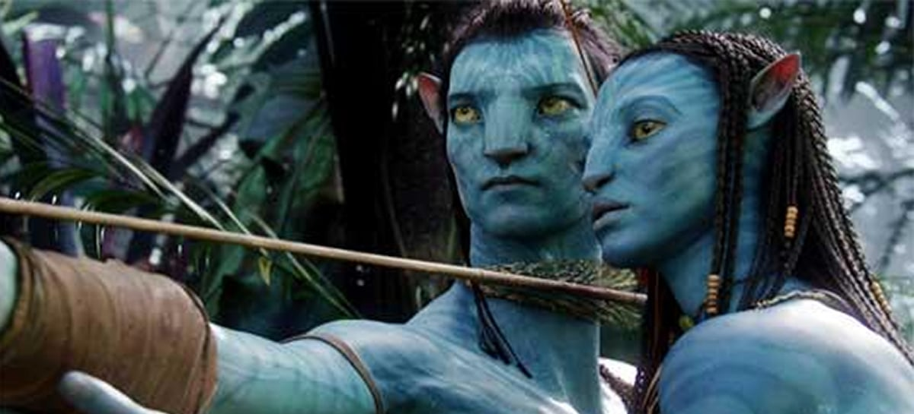
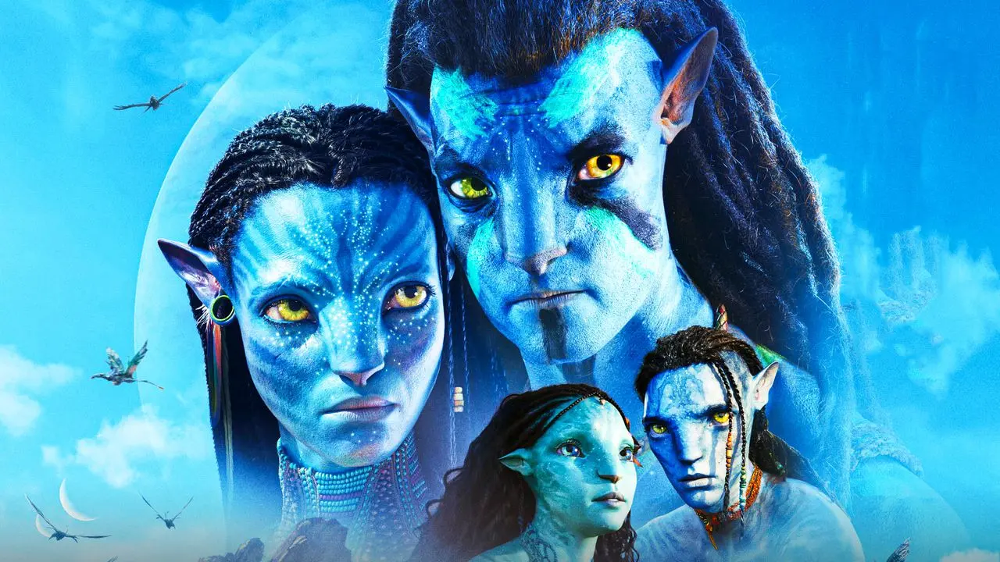

Sobre o primeiro filme (Avatar 2009)
Avatar é um filme épico de ficção científica estadunidense de 2009, escrito e dirigido por James Cameron, e estrelado por Sam Worthington, Zoë Saldaña, Michelle Rodriguez, Sigourney Weaver e Stephen Lang. O filme, que foi produzido pela Lightstorm Entertainment e distribuído pela 20th Century Fox, tem seu enredo localizado no ano 2154 e é baseado em um conflito em Pandora, uma das luas de Polifemo, um dos três planetas gasosos fictícios que orbitam o sistema Alpha Centauri. Em Pandora, os colonizadores humanos e os Na'vi, nativos humanoides, entram em guerra pelos recursos do planeta e pela continuação da existência da espécie nativa.[4] O título do filme refere-se aos corpos Na'vi-humanos híbridos, criados por um grupo de cientistas através de engenharia genética, para interagir com os nativos de Pandora.
Avatar: The Way of Water - Sinopse
Em Avatar: O Caminho da Água, sequência de Avatar (2009), após dez anos da primeira batalha de Pandora entre os Na'vi e os humanos, Jake Sully (Sam Worthington) vive pacificamente com sua família e sua tribo. Ele e Ney'tiri formaram uma família e estão fazendo de tudo para ficarem juntos, devido a problemas conjugais e papéis que cada um tem que exercer dentro da tribo. No entanto, eles devem sair de casa e explorar as regiões de Pandora, indo para o mar e fazendo pactos com outros Na'vi da região. Quando uma antiga ameaça ressurge, Jake deve travar uma guerra difícil contra os humanos novamente. Mesmo com dificuldade, Jake acaba fazendo novos aliados - alguns dos quais já vivem entre os Na'vi e outros com novos avatares. Mesmo com uma guerra em curso, Jake e Ney'tiri terão que fazer de tudo para ficarem juntos e cuidar da família e de sua tribo.
